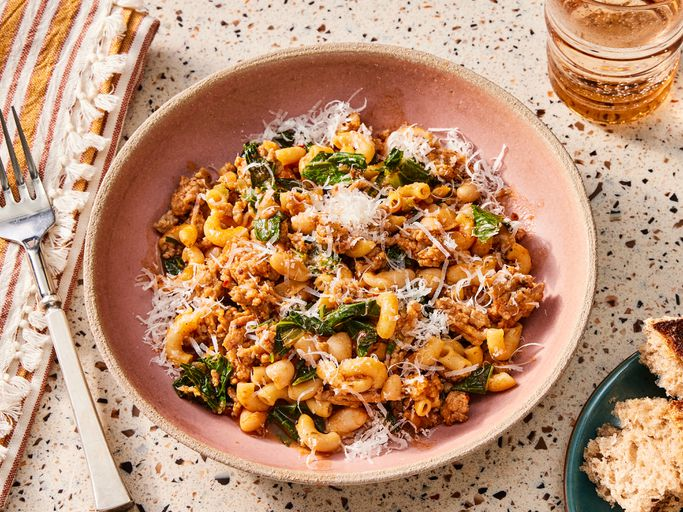

Pasta

Description
Pasta fazool is a classic Italian-American comfort food. This recipe works with any sausage, but I like the fennel and anise flavors of sweet Italian sausage with the beans. A hearty soup that's fast and easy to put together. This recipe makes enough for two large portions or four smaller ones.
Ingredients
- 12 ounces sweet bulk Italian sausage
- 1 stalk celery, diced
- ¾ cup dry elbow macaroni
Steps
- Gather the ingredients.
- Heat oil in a skillet over medium-high heat. Cook and stir sausage in the hot skillet until browned and crumbly, about 5 minutes. Reduce heat to medium. Add diced celery and chopped onion. Cook until onions are translucent, 4 to 5 minutes. Add dry pasta; cook and stir for 2 minutes.
- Place chopped chard in a bowl. Cover with cold water and rinse leaves; any grit will fall to the bottom of the bowl. Transfer chard to a colander to drain briefly; add to soup. Cook and stir until leaves wilt, 2 to 3 minutes.
Home